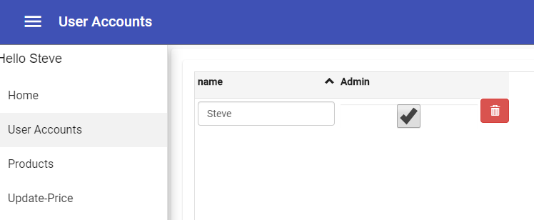

Users and Security
The next thing on our feature list is managing users and security for the application.
We want users to be able to register and sign in to the application, and we want to have a role based system where:
- Only admin users can update categories
- Only users that are Product Managers can update products.
- Non signed in users can only view the products and register if they want.
We already have a built in security implementation that can do this, let's review how we use it and how it works.
Creating the first user
We need to create our first user, to do that simply click on the Register menu entry, enter your info and click Register

Now that you are signed in you can see your name at the top right toolbar, and you can click it to signout.

After you sign out, you can click the sign in button at the top right and enter your name and password to sign in again.
User Management
The first user that signs in is by default the application's Admin and has access to the User Accounts menu entry where users can be managed.

Here you can manage the users and even reset their password.
Securing the Categories
Now that we understand how users can be managed, let's start securing the application by restricting access to the Categories.
In the categories.ts
import { IdEntity, StringColumn, EntityClass } from '@remult/core';
import { Roles } from '../users/roles';
@EntityClass
export class Categories extends IdEntity {
name = new StringColumn();
constructor() {
super({
name: "Categories",
- allowApiCRUD:true,
allowApiCRUD:Roles.admin,
allowApiRead:true
});
}
} We've changed the allowApiCRUD property to only allow it for users that has the role Roles.admin (later we'll define new roles)
We've kept the allowApiRead to true, since even non signed in users can view products and their categories in the home.component.ts
This step has secured the API which means that even someone who is accessing our server directly, without the application can't update the categories if they are not authorized to do so.
Next let's restrict access to the categories.component.ts
In the app-routing.module.ts
const routes: Routes = [
{ path: 'Home', component: HomeComponent },
{ path: 'User Accounts', component: UsersComponent, canActivate: [AdminGuard] },
{ path: 'Products', component: ProductsComponent },
{ path: 'Update-Price', component: UpdatePriceComponent },
- { path: 'Categories', component: CategoriesComponent },
{ path: 'Categories', component: CategoriesComponent, canActivate: [AdminGuard] },
{ path: 'Register', component: RegisterComponent, canActivate: [NotSignedInGuard] },
{ path: 'Account Info', component: UpdateInfoComponent, canActivate: [SignedInGuard] },
{ path: '', redirectTo: '/Home', pathMatch: 'full' },
{ path: '**', redirectTo: '/Home', pathMatch: 'full' }
]; We've added the , canActivate: [AdminGuard] definition to the Categories path. This means that a user that does not have the admin role, will not be able to access the categories entry in the menu.
Create another user, without admin privliges and see how that works.
Now that you know about the canActivate you can see that several of the prepared routes are using similar guards:
- AdminGuard - only users that have the
Adminrole. - NotSignedInGuard - only users that are not Signed in.
- SignedInGuard - only users that are signed in.
Previous Next
Help us improve, Edit this page on GitHub